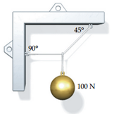
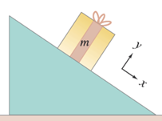

Eine Kugel mit dem Gewicht 100 N ist, wie in der Abbildung gezeigt, an mehreren Seilen aufge-hängt. Wie gross sind die Zugkräfte im horizontalen Seil und im schrägen Seil?\(\star\star\)

Die Kugel bewegt sich nicht, also müssen sich alle Kräfte aufheben.
Auf die Kugel wirkt die Schwerkraft nach unten von 100 N
Das schräge Seil muss deshalb vertikal 100 N aufbringen und in der
Diagonalen 100*sqrt(2) = 141 N.
Horizontal zieht dann das schräge Seil mit ebenfalls 100 N nach rechts,
was vom Seil mit 90° ausgeglichen werden muss. Es zieht mit 100 N nach
links.
Die Trägheitsbewegung kann als Vergleichsbewegung herangezogen
werden, um Rückschlüsse auf die Richtung real vorhandener Kräfte bei
einer gegebenen Bewegung zu ziehen. Die real ge-gebene Bewegung sei die
Kreisbewegung des Mondes um die Erde.
a) Gedankenexperiment: Wie würde sich der Mond im Verlaufe einer
Zeitspanne bewegen, wenn die Erde augenblicklich verschwinden
würde,
b) Wo befände sich der Mond bei Anwesenheit der Erde nach dieser
Zeitspanne?
c) Welche Wirkung hat demzufolge die Erde auf den Mond, bzw. welche
Richtung muss demzu-folge die Kraft der Erde auf den Mond haben?
d) Verallgemeinern Sie: Wohin ist eine Kraft gerichtet, die einen Körper
auf einer Kreisbahn hält?\(\star\star\)
a) Der Mond fliegt tangential zur Kreisbewegung geradeaus (keine
Kräfte – die Geschwindigkeit bleibt gleich, nach Betrag und
Richtung).
b) Auf einer Kreisbahn – die Gravitation zwingt ihn dazu
c) Erde und Mond ziehen einander an, ganz grob kann man die Erde als
fast in Ruhe annehmen und den Mond darum herum kreisen lassen. Wirklich
kreisen beide um den gemeinsamen Schwerpunkt, der innerhalb der Erde
liegt (kommt im 2. Semester)
d) Sie ist auf das momentane Zentrum der Kreisbahn gerichtet, entlang
dem momentanen Radius. Bei einer Kreisbahn ist das Zentrum immer am
gleichen Ort, bei einem gekurvten Weg ändert sich der Ort des
Zentrums.
Eine Kiste steht auf einem um einen Winkel \(\alpha\) geneigten Hang und bewegt sich
nicht.
Wählen Sie wie im Bild ein Koordinatensystem mit x parallel zum Hang und
y senkrecht zum Hang
Zeichnen Sie Gewichts- und Normalkraft ein, die auf die Kiste
wirken
Berechnen Sie den Betrag der Normalkraft aus der Bedingung, dass die
Kiste sich in y-Richtung nicht bewegt (sie sinkt nicht im Boden
ein)
Berechnen Sie die vektorielle Summe von Gewichts- und Normalkraft\(\star\)

\[Bild Giancoli, Physik\]
Gewichtskraft senkrecht zum Blatt nach unten.
Normalkraft parallel zu y nach oben. Die Länge ist noch nicht
bestimmt
Wir drücken die Gewichtskraft als Vektor im gewählten Koordinatensystem
xy aus
\(\vec{F_G}=mg(sin\alpha,-cos\alpha)\).
Die y-Komponente ist negativ, weil sie entgegen der y-Achse zeigt.
Die resultierende Kraft in y-Richtung ist \(F_y=F_N-mgcos\alpha\) und muss 0 sein, weil
sich der Körper in y-Richtung nicht bewegt.
Damit wird die Normalkraft \(\vec{F_N}=(0,mgcos\alpha)\). Sie hat nur
eine Komponente in y-Richtung.
Vektorsumme Die resultierende Kraft ist die Vektorsumme
\[{\vec{F}}_{res}=\vec{F_G}+\vec{F_N}=mg(sin\alpha,-cos\alpha)+mg(0,cos\alpha)=mg(sin\alpha,0)\]
Diese Kraft zeigt in x-Richtung parallel zum Hang
In y-Richtung muss die Summe 0 geben, das haben wir in die Rechnung
hineingesteckt, weil die Kiste sich senkrecht zum Boden nicht
bewegt.
Ein Zug bestehe aus einer Lok und drei Waggons gleicher Masse m=35 t
, die beim Anfahren mit 0.4 m/s2 beschleunigt werden. Die Waggons werden
mit A, B und C bezeichnet und sind als un-terschiedliche Körper zu
behandeln.
a) Fertigen Sie eine Skizze mit allen Kräften auf die einzelnen Waggons
an.
b) Berechnen Sie die Zugkraft FZ der Lok und die Beträge der
Kupplungskräfte FBA und FCB.\(\star\star\)
Skizze: A = B = C = Lok (das = ist eine Kupplung)
Lok beschleunigt A+B+C mit FZ=a m = 0.4 * 3 * 35’000 = 42 kN
Wagen C beschleunigt noch Wagen A und B mit FCB = 0.4 * 2 * 35’000 = 28
kN etc.
Ein Tennisball wird mit einer Geschwindigkeit vom Betrage \(v_0\) unter dem Winkel \(\alpha\) gegenüber der Horizontalen
abgeschlagen. Der Luftwiderstand wird vernachlässigt. Die y-Achse zeigt
senkrecht nach oben.
a) Mit welcher Geschwindigkeit vx(t) bewegt er sich in horizontaler
Richtung?
b) Mit welcher Geschwindigkeit vy(t) bewegt er sich in vertikaler
Richtung?
c) Berechnen Sie die Zeitfunktion x(t) für die Bewegung in horizontaler
Richtungd) Berechnen Sie die Zeitfunktion y(t) für die Bewegung in
vertikaler Richtung
e) Ermitteln Sie die Funktion y(x) für die Bahnkurve des Tennisballs?
Wie nennt man die spezielle Funktionskurve, die durch diese Funktion
beschrieben wird?\(\star\star\)
Es wirkt nur die Gravitationskraft, die Bewegungsgleichung ergibt
sich deshalb wie meist in diesen Fällen zu: \[\vec{r}(t)=\frac{1}{2}\vec{a}t^2+v_0t+\vec{r_0}\]
Wir setzen für a und v die Anfangsbedingungen ein: \[\vec{v_0}=|\vec{v_0}|(cos\alpha,sin\alpha)\mathrm{,}a=(0,-g)\]
\[\vec{r}(t)=\frac{1}{2}(0,-g)t^2+|\vec{v_0}|(cos\alpha,sin\alpha)t+(0,0)\]
Damit sind die Fragen a-d beantwortet. a und b sind die Komponenten von
v0, c und d die Kom-ponenten von r(t)
Für die Frage f) müssen wir die Komponenten des Ortsvektors separat
aufschreiben: \[r_x = |v_0| \cos
\alpha\] \[r_y = -\frac{1}{2} g t^2 +
|v_0| \sin \alpha t\] Wir lösen rx nach der Zeit t auf und setzen
in ry ein. Auf diese Weise eliminieren wir die Zeit t und erhalten y als
Funktion von x \[t = \frac{r_x}{|v_0| \cos
\alpha} \quad (\cos \alpha \neq 0)\] \[r_y = -\frac{1}{2} g \left( \frac{r_x^2}{(|v_0|
\cos \alpha)^2} \right) + \frac{|v_0| \sin \alpha}{|v_0| \cos \alpha}
r_x\] \[r_y = -\frac{1}{2} g \left(
\frac{r_x^2}{(|v_0| \cos \alpha)^2} \right) + \tan \alpha \,
r_x\] Das sieht kompliziert aus, ist aber von der einfachen Form
\(y(x)=ax^2+bx.\) Das ist die Gleichung
einer Parabel
Diese Form bezeichnet man auch als Wurfparabel.
Sie kommt zustande, weil sich der Körper horizontal mit konstanter
Geschwindigkeit bewegt, vertikal aber konstant beschleunigt ist.